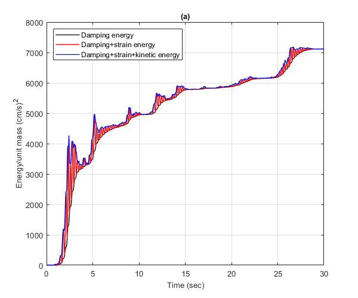
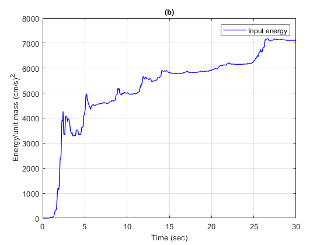

verification of seismic input energy of linear SDOF oscillator
Compare the output of LIDA.m and NLIDABLKIN.m for a linear SDOF oscillator in terms of seismic input energy per unit mass.
Contents
- Reference
- Description
- Load earthquake data
- Setup parameters for NLIDABLKIN function for linear SDOF
- Calculate dynamic response of linear SDOF using NLIDABLKIN.m
- Plot the energy time histories of the linear SDOF
- Calculate dynamic response of the linear SDOF using LIDA.m
- Plot the energy time history of the nonlinear SDOF
- Copyright
Reference
None
Description
Calculate the time histories of the various energies that are absorbed by a linear elastic SDOF oscillator using the linear function LIDA.m and the nonlinear function NLIDABLKIN.m to which an infinite yield limit has been assigned. The time history of the seismic input energy per unit mass obtained by the LIDA.m function (Figure b) is compared to the sum of the strain, damping and kinetic energies per unit mass obtained by the NLIDABLKIN.m function (Figure a). The linear SDOF system has Tn=0.5 sec and ksi=5%.
Load earthquake data
Earthquake acceleration time history of the El Centro earthquake will be used (El Centro, 1940, El Centro Terminal Substation Building)
fid=fopen('elcentro_NS_trunc.dat','r'); text=textscan(fid,'%f %f'); fclose(fid); t=text{1,1}; dt=t(2)-t(1); xgtt=text{1,2};
Setup parameters for NLIDABLKIN function for linear SDOF
Mass
m=1;
Eigenperiod
Tn=0.5;
Calculate the small-strain stiffness matrix
omega=2*pi/Tn; k_hi=m*omega^2;
Assign linear elastic properties
k_lo=k_hi; uy1=1e10;
Critical damping ratio
ksi=0.05;
Initial displacement
u0=0;
Initial velocity
ut0=0;
Algorithm to be used for the time integration
AlgID='U0-V0-Opt';
Minimum absolute value of the eigenvalues of the amplification matrix
rinf=1;
Maximum tolerance of convergence for time integration algorithm
maxtol=0.01;
Maximum number of iterations per integration time step
jmax=200;
Infinitesimal acceleration
dak=eps;
Calculate dynamic response of linear SDOF using NLIDABLKIN.m
Apply NLIDABLKIN
[u,ut,utt,Fs,Ey,Es,Ed,jiter] = NLIDABLKIN(dt,xgtt,m,k_hi,k_lo,uy1,...
ksi,AlgID,u0,ut0,rinf,maxtol,jmax,dak);
Calculate the kinetic energy of SDOF
Ek=1/2*m*ut.^2;
Plot the energy time histories of the linear SDOF
Plot the damping energy, damping plus strain energy, damping plus strain plus kinetic energy of the linearly elastic SDOF system. Convert from m to cm
figure() plot(t',cumsum(Ed)*1e4,'k','LineWidth',1) hold on plot(t',cumsum(Ed)*1e4+Es*1e4,'r','LineWidth',1) plot(t',cumsum(Ed)*1e4+Es*1e4+Ek*1e4,'b','LineWidth',1) hold off xlim([0,30]) ylim([0,8000]) xlabel('Time (sec)','FontSize',10); ylabel('Energy/unit mass (cm/s)^2','FontSize',10); title('(a)','FontSize',10) grid on legend({'Damping energy','Damping+strain energy',... 'Damping+strain+kinetic energy'},'location','northwest') drawnow; pause(0.1)
Calculate dynamic response of the linear SDOF using LIDA.m
Apply the LIDA.m function for the linear SDOF
[u,ut,utt,Ei] = LIDA(dt,xgtt,omega,ksi,u0,ut0,AlgID,rinf);
Plot the energy time history of the nonlinear SDOF
Plot the damping energy, the hysteretic energy and strain energy of the nonlinear SDOF system. Convert from m to cm.
figure(); plot(t,cumsum(Ei)*1e4,'b','LineWidth',1) xlim([0,30]) ylim([0,8000]) xlabel('Time (sec)','FontSize',10); ylabel('Energy/unit mass (cm/s)^2','FontSize',10); title('(b)','FontSize',10) grid on legend('Input energy') drawnow; pause(0.1)
Copyright
Copyright (c) 2018-2023 by George Papazafeiropoulos
- Major, Infrastructure Engineer, Hellenic Air Force
- Civil Engineer, M.Sc., Ph.D.
- Email: gpapazafeiropoulos@yahoo.gr